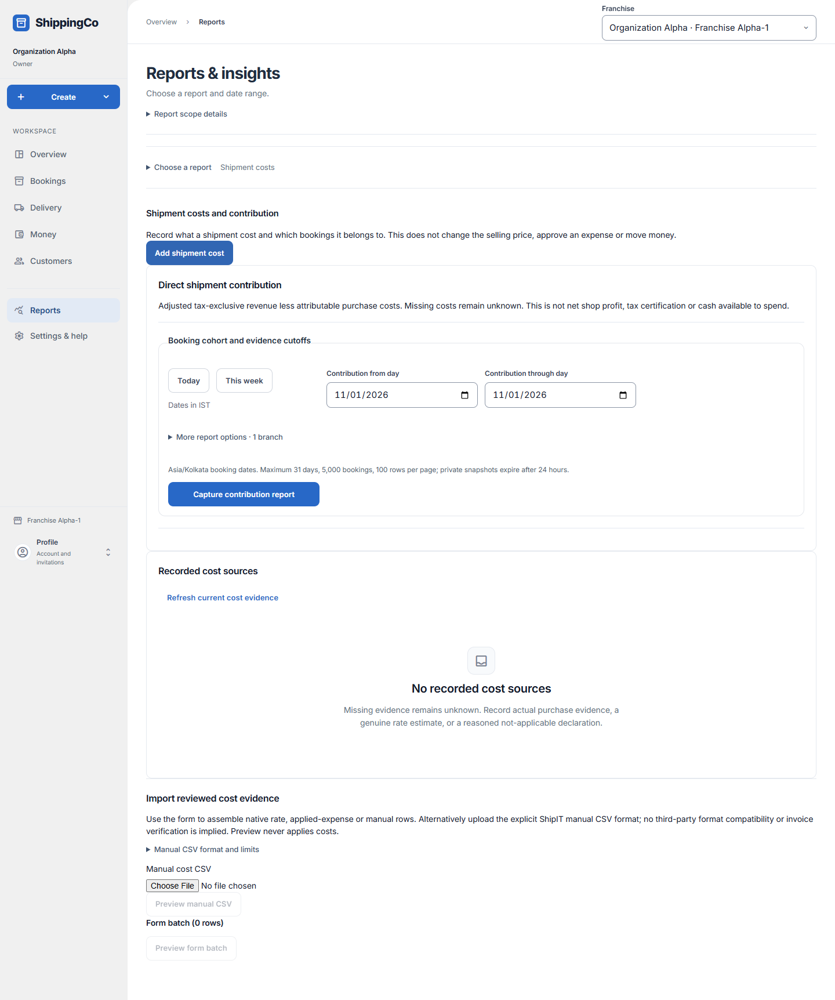

Revenue less shipment costs
What this helps you do
- Compare adjusted revenue with shipment costs, including missing and estimated evidence.
Open this feature
- Reports > Choose a report > What did each shipment cost?.
- Check the active branch first. Available actions depend on your role and the selected record.

Capture contribution
- Choose Today, This week, or Contribution from day and Contribution through day. Maximum booking period is 31 days.
- More report options is optional. Expand it for permitted branches, grouping or historical cutoffs.
- Effective cutoff E limits when changes took effect; Recorded evidence cutoff K limits when the app knew about them. Both are optional UTC timestamps; leave blank for current evidence.
- Choose grouping by courier, service, customer, destination or period when needed. Capture contribution report.
Read and inspect
- Compare adjusted tax-exclusive revenue, actual costs, estimated costs and unknown categories. Missing costs are unknown, not zero. Contribution is not net profit or cash available to spend.
- Inspect booking and cost evidence. Open current source history can show newer revisions than the captured report.
- Load next contribution page for more rows. Download contribution CSV uses the saved capture when export is permitted. Create a new report to include later changes.
Fields and when to use them
These fields belong to the actions above. Complete the fields for your selected action; optional filters may stay blank.
- Contribution from day: Enter the contribution from day for this action, using the time zone shown. Required when this field is shown.
- Contribution through day: Enter the contribution through day for this action, using the time zone shown. Required when this field is shown.
- Effective cutoff E (UTC, optional): Advanced: the latest effective time included. Leave blank for now. Optional
- Recorded evidence cutoff K (UTC, optional): Advanced: include evidence recorded by this time. Leave blank for now. Optional
- Contribution grouping: Group by courier, service, customer, destination or period. Use when shown for the selected action.
If you need to retry
- No records: check branch, account or customer and filters. Use Load more where offered before deciding a record is missing.
- Invalid or missing value: read the form message, correct the draft, then review amounts and references again.
- Uncertain save: use the offered retry for the same request. Do not create a second payment, return, expense or application to guess whether the first saved.
- Changed evidence or policy: refresh current records and review them before a new request. A saved report retains its captured figures; create another report for current results.
About this guide
Checked against the current screen code on 1 November 2026. This explains app behaviour, not tax or accounting advice. Buttons and records can differ by role.